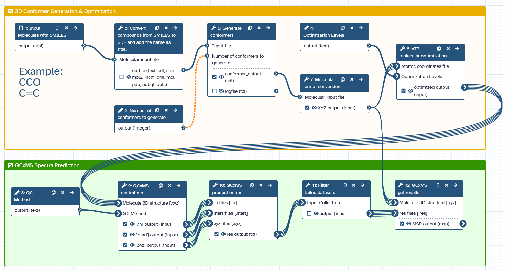

High-Performance Computing (HPC) environments are integral to quantum chemistry and computationally intense research, yet their complexity poses challenges for non-HPC experts. Navigating these environments proves challenging for researchers lacking extensive computational knowledge, hindering efficient use of domain specific research software. The prediction of mass spectra for in silico annotation is therefore inaccessible for many wet lab scientists. Our main goal is to facilitate non-experts in HPC navigate this complexity and make semi-empirical Quantum Chemistry (QC)-based predictions available without needing advanced computational skills. To address this challenge, a comprehensive approach is proposed. We chose specific file formats for storing molecular structures, ensuring compatibility across diverse tools and platforms. The xTB quantum chemistry package for molecular geometry optimization is leveraged for its capability to balance between accuracy and computational cost, making it well-suited for non-HPC focused applications. Integrating QC-based Mass Spectrometry (QCxMS) into Galaxy enables the prediction of mass spectra and offers insights into molecular composition and properties. Our workflow demonstrates the utility of computing spectra using QCxMS along with complementary tools. We also present details of runtime performance metrics for four distinct molecules. This work highlights how non-HPC users can execute these predictions with ease, without requiring advanced computational skills. Additionally, a Docker image is created to encapsulate necessary tools, accompanied by user-friendly wrappers, simplifying the entire process for non-expert users. Within this context, potential improvements are considered, focusing on improving the Conda package for better performance by incorporating Fortran and Intel compiler optimizations. These considerations play a crucial role in refining the proposed methodology, enhancing user experience, and expanding the reach of semi-empirical predictions in quantum chemistry for mass spectra predictions.
{kind=link}